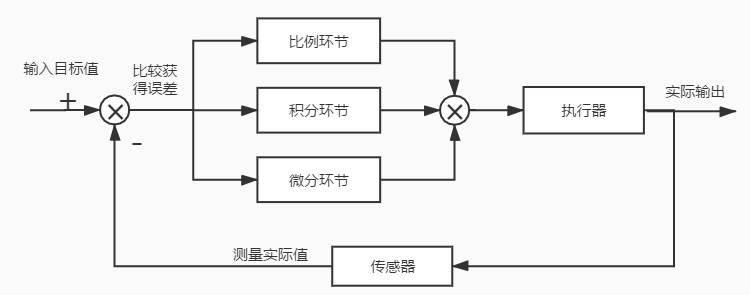

Chapter0 PID
PID介绍
PID是Proportional（比例）、Integral（积分）、Differential（微分）的首字母缩写； 是一种结合比例、积分和微分三种环节于一体的闭环控制算法，它是目前为止在连续控制系统中计数最为成熟的一种控制算法；
在工业过程控制中，按被控对象的 实时数据采集值y(t) 与 给定值r(t) 比较产生的 误差e(t) 的比例、积分和微分进行控制。PID控制具有原理简单，鲁棒性强和实用面广等优点，是一种技术成熟、应用最为广泛的控制系统。
数字PID（离散PID），结合计算机的计算与逻辑功能，不但继承了PID控制器的这些特点，而且由于软件系统的灵活性，使PID算法可以得到修正更加完善，变得更加灵活多样，更能满足生产过程中提出的多种控制要求。在实际应用中，可以根据被控制对象的特性和控制要求灵活地改变其结构，取其中一部分环节构成控制系统。如P比例控制、PI比例积分控制、PD比例微分控制等。
下述中，我们将 error(t) 即误差随时间的变化关系，简写为 e(t)
PID算法
\(u(t) = K_p \left[ e(t) + \frac{1}{T_i} \int_0^t e(t) dt + T_d \frac{de(t)}{dt} \right]\)
\(u(t) = K_p e(t) + K_i \int_0^t e(t) dt + K_d \frac{de(t)}{dt}\)
\(u(t) = K_p 误差 + K_i 面积 + K_d 斜率\)
- Ti——积分时间常数
- Td——微分时间常数
- u(t)——PID控制器的输出信号，关于时间t的函数
- e(t)——error(t)，给定值r(t)与测量值y(t)之差，关于时间t的函数
比例P：物理意义
比例控制是最简单的一种控制方式，成比例的反应控制系统中输入与输出的偏差信号，只要偏差一旦产生，就立即产生控制的作用来减小产生的误差。
比例控制器的输出与输入成正比关系，能够迅速的反应偏差，偏差减小的速度取决于比例系数Kp，Kp越大偏差减小的就越快，但是极易引起震荡（即微量误差被放大）。Kp减小发生震荡的可能性减小（即微量误差作用小），但是调节的速度变慢。
单纯的比例控制存在不能消除的静态误差，这里就需要积分来控制。
积分I：物理意义
在比例控制环节产生了静态误差，在积分环节中，主要用于就是消除静态误差提高系统的无差度。积分作用的强弱，取决于积分时间常数Ti， Ti越大积分作用越弱，反之则越强。
积分控制作用的存在与偏差e(t)的存在时间有关，只要系统存在着偏差，积分环节就会不断起作用，对输入偏差进行积分，使控制器的输出及执行器的开度不断变化，产生控制作用以减小偏差。
在积分时间足够的情况下，可以完全消除静差，这时积分控制作用将维持不变。 Ti越小，积分速度越快，积分作用越强。积分作用太强会使系统超调加大，甚至使系统出现振荡。
微分D：物理意义
虽然积分环节可以消除静态误差但是降低了系统的响应速度，所以引入微分控制器就显得很有必要，尤其是具有较大惯性的被控对象使用PI控制器很难得到很好的动态调节品质，系统会产生较大的超调和振荡，这时可以引入微分作用。
微分环节的作用是反应系统偏差的一个变化趋势，也可以说是变化率，可以在误差来临之前提前引入一个有效的修正信号，有利于提高输出响应的快速性，减小被控量的超调和增加系统的稳定性。
在偏差刚出现或变化的瞬间，不仅根据偏差量作出及时反应（即比例控制作用）， 还可以根据偏差量的变化趋势（速度）提前给出较大的控制作用（即微分控制作用），将偏差消灭在萌芽状态， 这样可以大大减小系统的动态偏差和调节时问，使系统的动态调节品质得以改善。
微分环节有助于系统减小超调，克服振荡，加快系统的响应速度，减小调节时间，从而改善了系统的动态性能，但微分时间常数过大，会使系统出现不稳定。
微分控制作用一个很大的缺陷是容易引入高频噪声，所有在干扰信号比较严重的流量控制系统中不宜引入微分控制作用。
离散化PID算法
由于计算机的运算是离散的，要想实现数字PID控制首先需要将连续函数进行离散化。

如图，PID控制即对偏差的控制，如果偏差为0，则比例环节不起作用，只有存在偏差时，比例环节才起作用。
积分环节主要是用来消除静差，所谓静差，就是系统稳定后输出值和设定值之间的差值，积分环节实际上就是偏差累计的过程，把累计的误差加到原有系统上以抵消系统造成的静差；
而微分信号则反应了偏差信号的变化规律，也可以说是变化趋势，根据偏差信号的变化趋势来进行超前调节，从而增加了系统的预知性；
\(u(t) = K_p \left[ e(t) + \frac{1}{T_i} \int_0^t e(t) dt + T_d \frac{de(t)}{dt} \right]\)
- 假设采集数据的间隔时间为T，则在第 k 时刻有：
- 误差等于第k个周期时刻的误差等于输入（目标）值减输出（实际）值，则有： \(r_{in}(k)-r_{out}(k) = e(k)\)
- 积分环节为所有时刻的误差和，则有： \(e(k)+e(k-1)+e(k-2)+…+e(1)= \sum_{i=1}^{k} e(i)\)
- 微分环节为第k时刻误差的变化率，则有：\(\frac{e(k)-e(k-1)}{T}\)
\(u(k) = K_{p} \left[e(k) + \frac{T}{T_{i}} \sum_{i=1}^{k} e(i) + T_d \frac{e(k) - e(k-1)}{T} \right]\)
位置式PID
通过上面的推导，我们就获得了第一个离散PID算法，即位置式PID
\(u(k)=K_{p}e(k)+K_{i}\sum_{i=1}^{k} e(i)+K_{d}[e(k)-e(k-1)]\)
- k为采样的序号
- e(k)为第k次的误差
- u(k)为输出量
增量式PID
接下来只需要两步，就可以得到第二个离散PID算法，即增量式PID
第一步，将k-1代入k得：\(u(k-1)=K_{p}e(k-1)+K_{i}\sum_{i=1}^{k-1} e(i)+K_{d}[e(k-1)-e(k-2)]\)
第二步，由 Δu(k) = u(k) - u(k-1)得：
\(\Delta u(k) = K_{p} (e(k) - e(k-1)) + K_{i}e(k) + K_{d} [e(k) - 2e(k-1) + e(k-2)]\)
- \(\sum_{i=1}^{k} e(i)- \sum_{i=1}^{k-1} e(i)= e(k)\)
- \(u(k) = u(k-1) + \Delta u(k)\)
位置式代码示例
typedef struct
{
// 1 PID核心参数（需根据实际系统调试）
float kp; // 比例系数
float ki; // 积分系数
float kd; // 微分系数
// 2 偏差相关变量
float target; // 目标值（期望值）
float feedback; // 反馈值（实际测量值）
float err; // 当前偏差 e(k) = target - feedback
float err_prev; // 上一次偏差 e(k-1)
float err_sum; // 偏差积分累积 sum(e(0)~e(k))
// 3 输出限制（防止积分饱和、硬件过载）
float out_max; // 输出最大值（如PWM占空比上限1000）
float out_min; // 输出最小值（如下限0）
float sum_max; // 积分限幅最大值
float sum_min; // 积分限幅最小值
// 4 可选功能：死区阈值（小于该偏差时不响应，避免抖动）
float dead_zone;
// 5 PID输出结果
float output; // 最终输出 u(k)
}pid_st;
float positional_pid(pid_st *pid, float target_val, float feedback_val)
{
// 空指针保护
if (pid == NULL) return 0.0f;
// 计算当前偏差
pid->target = target_val;
pid->feedback = feedback_val;
pid->err = pid->target - pid->feedback;
// 死区处理（偏差小于阈值时，输出0，避免微小抖动）
if (fabs(pid->err) < pid->dead_zone)
{
pid->err = 0.0f;
}
// 积分分离（误差较大时去掉积分项作用）
if(fabs(pid->err) < pid->out_max/2)
{
// 积分，累加
pid->sum += pid->err;
// 积分限幅，防止积分饱和
if(pid->sum > sum_max)
{
pid->sum = sum_max;
}
else if(pid->sum < sum_min)
{
pid->sum = sum_min;
}
}
// 计算原始输出
pid->output = (pid->kp * pid->err) /* 比例环节 */
+ (pid->ki * pid->err_sum) /* 积分环节 */
+ (pid->kd * (pid->err - pid->err_prev)); /* 微分环节 */
// 传递误差
pid->err_prev = pid->err;
// 输出限幅
if (pid->output > pid->out_max)
{
pid->output = pid->out_max;
}
else if (pid->output < pid->out_min)
{
pid->output = pid->out_min;
}
return pid->output;
}
增量式代码示例
typedef struct
{
// 1 PID核心参数（需根据实际系统调试）
float kp; // 比例系数
float ki; // 积分系数
float kd; // 微分系数
// 2 偏差相关变量
float target; // 目标值（期望值）
float feedback; // 反馈值（实际测量值）
float err; // 当前偏差 e(k) = target - feedback
float err_prev1; // 上一次偏差 e(k-1)
float err_prev2; // 上上次偏差 e(k-2)
float err_sum; // 偏差积分累积 sum(e(0)~e(k))
// 3 输出限制（防止积分饱和、硬件过载）
float out_max; // 输出最大值（如PWM占空比上限1000）
float out_min; // 输出最小值（如下限0）
// 4 可选功能：死区阈值（小于该偏差时不响应，避免抖动）
float dead_zone;
// 5 PID输出结果
float output; // 最终输出 u(k)
}pid_st;
float incremental_pid(pid_st *pid, float target_val, float feedback_val)
{
// 空指针保护
if (pid == NULL) return 0.0f;
// 计算当前偏差
pid->target = target_val;
pid->feedback = feedback_val;
pid->err = pid->target - pid->feedback;
// 死区处理（偏差小于阈值时，输出0，避免微小抖动）
if (fabs(pid->err) < pid->dead_zone)
{
pid->err = 0.0f;
}
//累加
pid->output += (pid->kp * (pid->err - pid->err_prev1)) /* 比例环节 */
+ (pid->ki * pid->err) /* 积分环节 */
+ (pid->kd * (pid->err - 2 * pid->err_prev1 + pid->err_prev2)); /* 微分环节 */
// 传递误差
PID->err_prev2 = PID->err_prev1;
PID->err_prev1 = PID->err;
// 输出限幅
if (pid->output > pid->out_max)
{
pid->output = pid->out_max;
}
else if (pid->output < pid->out_min)
{
pid->output = pid->out_min;
}
return pid->output;
}
位置PID VS 增量PID
输出形式与输出特性
-
位置式PID控制器:
直接输出执行器的最终控制量 u(k)。
积分项累加了从开始到现在所有的误差，计算时需要存储全部历史误差（或不断累加一个和），长期运行可能导致积分项数值很大甚至溢出。控制输出与全部历史有关。
-
增量式PID控制器:
输出的是控制量的变化量 Δu(k)，再由上一次的控制量累加得到本次控制量。
算式中不再有累加和，只需要保存最近三拍的误差 e(k),e(k−1),e(k−2)，控制量由增量不断累积。它不维持全历史积分，运算量小，也不存在积分项无限增长的问题。
如何判断选用形式？
-
使用位置PID：执行器本身没有积分特性，控制输出对应 绝对位置 / 绝对量
典型例子：舵机PWM、风扇转速PWM。单次直接控制量，不是 “走一步”
输出特点：一旦计算错误，输出会直接跳变。无积分累积，断电就归零
-
使用增量PID：执行器本身有积分特性，控制输出对应 增加位置 / 增量
典型例子：步进电机运行位置、伺服电机运行位置、调节阀
输出特点：不会突变，抗干扰强。计算错误只影响一步
积分饱和与抗饱和能力
-
位置式：由于积分项不断累加，若执行器达到限幅（如阀门全开/全关），控制器仍在积分，会使积分项变得极大，当偏差反向时输出迟迟退不出饱和区，造成严重的超调与滞后。必须额外设计抗积分饱和策略（如积分分离、遇限削弱积分等）。
-
增量式：积分作用只体现在 Ki e(k)这一项当前误差上，没有累加历史误差的过程。如果输出已到达限幅，只需限制u(k) 不再增加，就不会产生额外的积分积累，偏差反转后能立即退出饱和，具备天然的抗积分饱和能力。
故障影响与安全性
-
位置式：一旦计算出现错误或干扰，会立即给出一个可能极大的错误输出值，直接作用于执行器，冲击较大。
-
增量式：单次计算错误只产生一步错误的增量，执行器位置不会瞬间大幅度跳变，容错性稍好。但若增量长期错误累积而没有位置反馈，会出现漂移，通常需要结合位置反馈或定期校正。